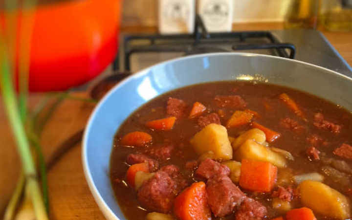

corned beef and potato hash

This recipe has been passed through my family, more of a stew than a hash.
it is a perfect comfort food for those autumn nights.
Ingredients
- potatoes (diced into inch cubes)
- carrots (sliced)
- 1 large onion (diced)
- 2 beef stock cubes
- gravy granuals
- frozen peas (about a fistful)
- 2 tins of corned beef (cubed)
- salt and cracked black pepper
Method
-
in a large pan boil the potatoes, carrots, and onion until potatoes are
soft but a fork still sticks in
-
crumble in the stock cubes, add the gravy granuals and mix until gravy
thinckened (if the gravy gets too thick you can always add more boiling
water to thin it out again)
- add salt and pepper to taste
-
add the corned beef and frozen peas and cook until the peas defrost and
warm through (roughly 2/3 minutes)
- serve with crusty bread and enjoy
Home